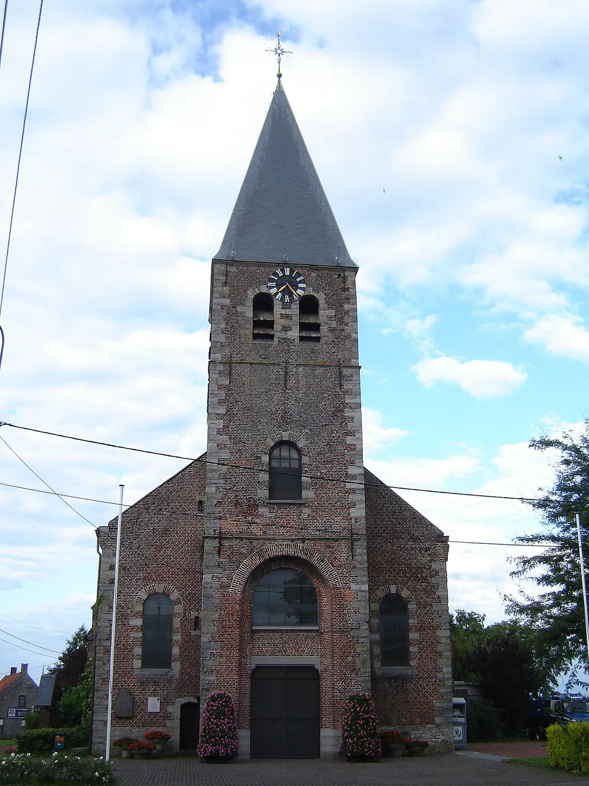
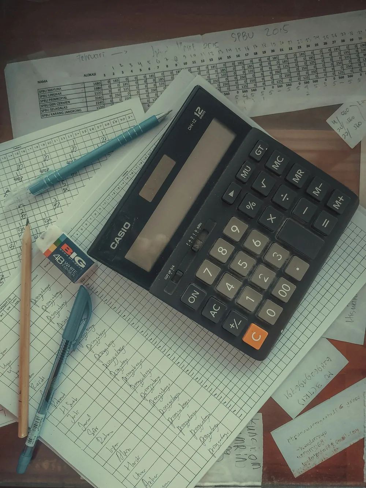
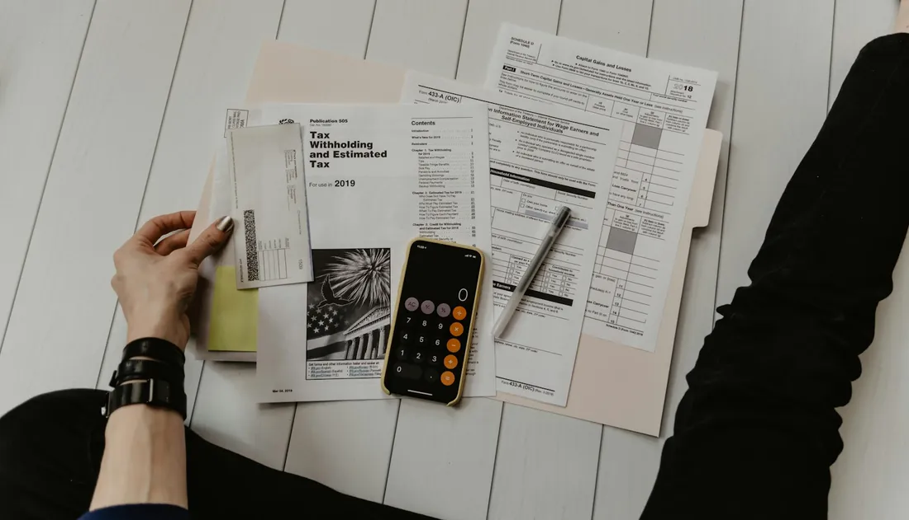
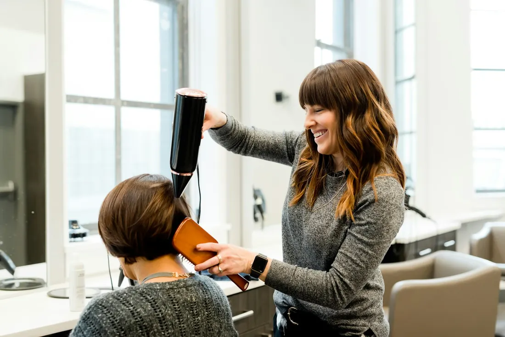
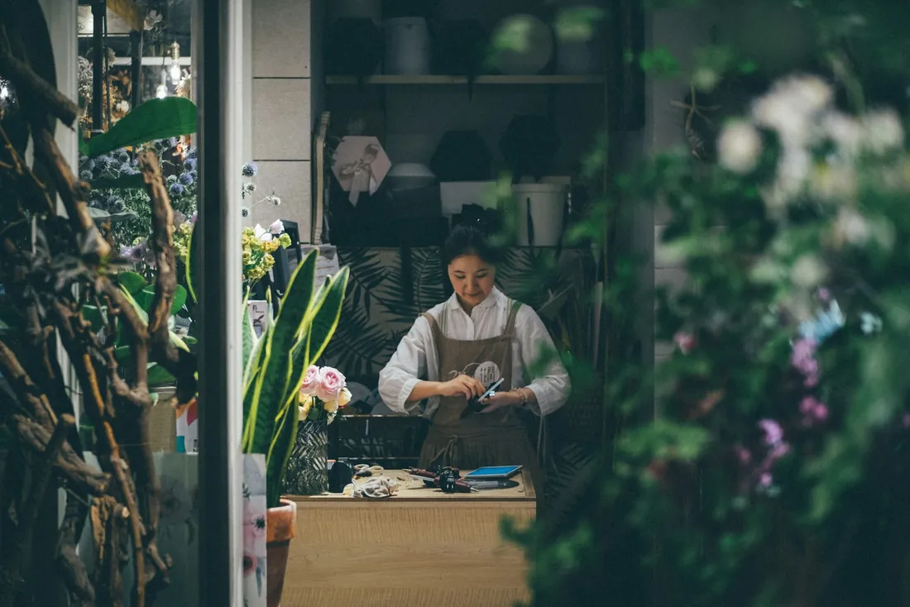
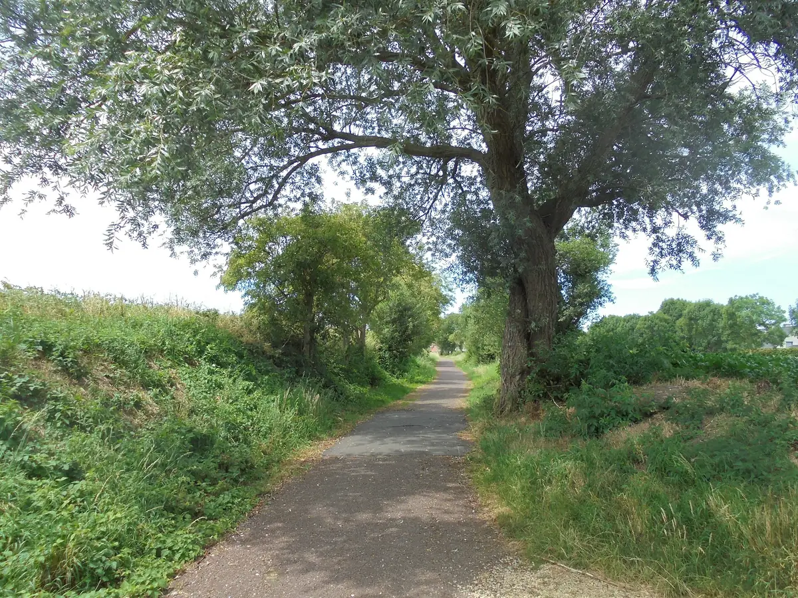
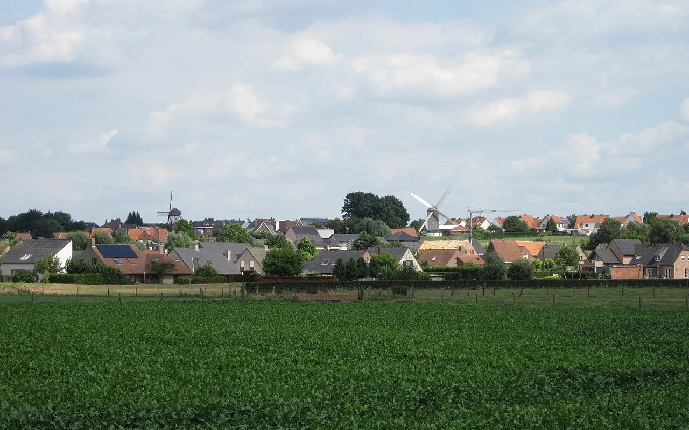

Al sinds 1989 de vaste boekhouder van zelfstandigen uit de streek.
Ik ben Sylvie Vandenberghe. Vanuit Heestert doe ik de boekhouding, de btw en de belastingaangiftes voor zelfstandigen, vennootschappen en gezinnen. En wie een eigen zaak wil beginnen, help ik door het hele opstartproces.

Een vraag tussendoor? Bel of app me gerust.
Sylvie- Boekhouding en fiscaliteitbtw, jaarrekening, aangiftes
- Begeleiding van startersvan idee tot eerste factuur
- Met specialistenrevisor, advocaat, notaris
- Heestert, Zwevegemook voor Moen, Otegem en verder
De wederkerende taken, en de vragen ertussen
Tik op wat bij u past. Dan staat het onderwerp al klaar in het contactformulier onderaan.
Boekhouding en btw-aangiftes
U bezorgt uw aankoop- en verkoopfacturen, ik boek ze in en dien uw btw-aangifte op tijd in. Ontbreekt er een stuk, dan hoort u het van mij en niet van de fiscus.
Vraag hierover
Jaarrekening en vennootschapsbelasting
Het boekjaar afsluiten, de jaarrekening neerleggen en de aangifte indienen. Vooraf overlopen we wat de cijfers zeggen.
Vraag hierover
Personenbelasting
Uw aangifte als particulier, met alle fiches en attesten op een rij en de aftrekposten waar u recht op hebt.
Vraag hierover
Starten als zelfstandige
Hoofdberoep of bijberoep, eenmanszaak of vennootschap. Ik begeleid u door het hele opstartproces, met uitleg over elke stap.
Vraag hieroverAdvies voor u en uw zaak
Een overname, een nieuwe vennootschap of een erfenis met een zaak erbij. Waar nodig schakel ik de juiste specialist mee in.
Vraag hieroverWaar staat u nu?
Kies wat het best bij u past. U ziet meteen wat ik voor u doe en wat u best meebrengt naar het eerste gesprek.

U wilt een eigen zaak beginnen
Misschien eerst in bijberoep, misschien meteen voluit. We zetten alles op een rij voor u de stap zet.
Wat ik voor u doe
- Uitleg over eenmanszaak of vennootschap, en wat dat betekent voor uw belastingen
- Een stappenplan voor ondernemingsloket, btw en sociaal verzekeringsfonds
- Uw eerste facturen en eerste btw-aangifte, samen
Breng mee
- Een korte uitleg van uw plan
- Wat u denkt te verdienen en uit te geven
- Uw identiteitskaart
- Facturen van wat u al kocht voor de zaak
Een eigen zaak beginnen? Zo pakken we het aan.
Het staat niet voor niets in mijn logo. Wie start, heeft vragen over documenten, procedures en kosten. U krijgt ze beantwoord voor u iets tekent.
- 1
Een eerste gesprek
Over wat u wilt doen, hoeveel u verwacht te verkopen en wat u nu al uitgeeft. Breng gerust uw vragen op papier mee.
- 2
De juiste vorm kiezen
Eenmanszaak of vennootschap, hoofdberoep of bijberoep. U beslist met de cijfers voor u, niet op goed geluk.
- 3
Inschrijven en aansluiten
Ondernemingsloket, btw-nummer, sociaal verzekeringsfonds en een zakelijke rekening. U weet wat in welke volgorde moet.
- 4
Uw eerste kwartaal
De eerste facturen en de eerste btw-aangifte doen we samen. Daarna weet u hoe het loopt, en ik volg het verder op.


Ik ben Sylvie.
In maart 1989 begon ik als zelfstandig boekhouder. Vandaag ben ik erkend als (fiscaal) accountant bij het ITAA, het Instituut voor Belastingadviseurs en Accountants.
Ik volg voortdurend bijscholing, want de regels veranderen elk jaar. En voor wat verder gaat dan boekhouding werk ik samen met bedrijfsrevisoren, advocaten en notarissen. Zo krijgt u ook bij een overname of een moeilijk dossier een antwoord van iemand die het weet.
Boekhoudkantoor in Heestert
Zo werken we samen
Geen ingewikkelde systemen. U bezorgt uw stukken op de manier die u het makkelijkst vindt.
Kennismaken
Op kantoor in de Vierkeerstraat. U vertelt wat u doet, ik zeg eerlijk wat ik voor u kan betekenen.
Stukken bezorgen
Digitaal, per mail of gewoon in een map. Elk kwartaal krijgt u een seintje als het weer tijd is.
Ik volg op
Aangiftes op tijd binnen, en een telefoontje als er iets verandert dat u moet weten.
Wat klanten ervan vinden
Op Google, Facebook en Trustlocal geven klanten hun score. Lees ze gerust zelf na.
Wat mensen me vaak vragen
Staat uw vraag er niet tussen? Stuur ze gerust door, ook als het maar een korte vraag is.
Stel uw vraag via WhatsAppKan ik enkel voor mijn aangifte personenbelasting komen?
Ja. Ook zonder eigen zaak kunt u bij mij terecht voor uw aangifte. Breng uw fiches, attesten en het vorige aanslagbiljet mee, dan vullen we ze samen in.
Ik start in bijberoep. Heb ik dan al een boekhouder nodig?
Dat hangt af van wat u doet en hoeveel. In een eerste gesprek bekijken we wat u zelf kunt bijhouden en waar het loont dat ik het overneem.
Moet ik sinds 2026 elektronisch factureren?
Als u btw-plichtig bent en aan andere Belgische ondernemingen factureert, wel. Sinds 1 januari 2026 moeten die facturen gestructureerd en elektronisch verlopen, van software naar software. Een pdf in een mail volstaat dan niet meer. Ik help u kiezen hoe u dat het eenvoudigst regelt.
Hoe bezorg ik mijn facturen en stukken?
Zoals het u past: digitaal, per mail of in een map die u op kantoor afgeeft. Belangrijk is vooral dat alles er op tijd is voor de aangifte.
Ik wil overstappen van boekhouder. Is dat veel werk?
Minder dan u denkt. Breng uw laatste aangiftes en de facturen van dit jaar mee, dan spreken we af vanaf wanneer ik het overneem.
Werkt u ook voor klanten buiten Zwevegem?
Zeker. Heestert ligt vlak bij Avelgem, Anzegem en Kortrijk, en veel kan ook gewoon digitaal of telefonisch.
Kom eens langs in Heestert
Bel, stuur een berichtje of vul het formulier in. Dan spreken we een moment af dat u past.